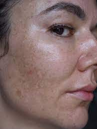

Melasma
Melasma is a skin condition characterized by brown or blue-gray patches or freckle-like spots. It's often called the “mask of pregnancy.”
Melasma happens because of overproduction of the cells that make the color of your skin. It is common, harmless and some treatments may help.
to join the fun.
CHECK NOW!